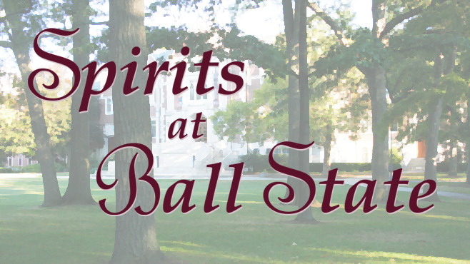

<link rel="import" href="../../bower_components/polymer/polymer.html">
<link rel="import" href="../../bower_components/paper-button/paper-button.html">
<link rel="import" href="../view-behavior/view-behavior.html">
<link rel="import" href="../shared-styles/shared-styles.html">


<dom-module id="title-view">
  <template>
    <style include="shared-styles">
      :host {
        display: block;
      }
      img {
        width: 80%;
        height: 80%;
        margin:0 auto;
        display: block;
        padding-top: 50px;
        padding-bottom: 30px;
      }
    </style>
    </img>
    <container>
      <div class="text">
        Nature spirits lurk around Ball State campus, watching how people treat the environment.
      </div>
      <div class="text">
        Maybe one will approach you!
      </div>
    <container>

    <paper-button class="center" raised on-tap="_start">Play</paper-button>
  </template>
  <script>
    Polymer({
      is: 'title-view',
      behaviors: [ViewBehavior],

      _start: function() {
        this._goToPage('map');
      }
    });
  </script>
</dom-module>
